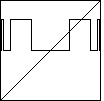
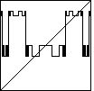
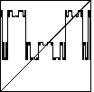
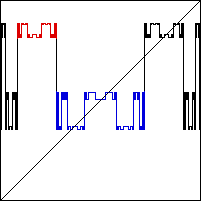

Here are the pictures of the universal function at the superstable
|  |  |  |
These pictures hint at the fractal nature of the limiting
graph as
Comparing these pictures, we see at each period-doubling
the horizontal segments of the previous graph are replaced by
shrunken (sometimes vertically reflected) copies of the
(At the scale of our pictures, this is clearest comparing the
|  |
As additional evidence for the fractal character of this universal function, note the red part of the picture is a scaled (and reflected) version of the blue part.
Return to the universal Function.